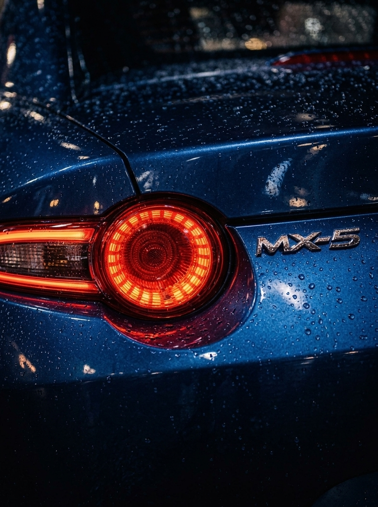

Faza 01
Početak
Počeli smo sa osnovnom opremom i velikom željom da svaki rezultat bude besprekoran. Bez obzira na skromne uslove, posvećenost poslu i pažnja prema detaljima bile su potpune od prvog dana.
Mojsilov Detailing gradili smo korak po korak, od skromnih početaka do premium mobilne usluge širom Beograda. Kroz sve faze ostao je isti princip: posvećenost svakom vozilu kao da je naše.
Svaka faza je gradila isti temelj: kvalitet bez kompromisa i odnos u koji se ulaže dugoročno.
Faza 01
Počeli smo sa osnovnom opremom i velikom željom da svaki rezultat bude besprekoran. Bez obzira na skromne uslove, posvećenost poslu i pažnja prema detaljima bile su potpune od prvog dana.
Faza 02
Sledila je investicija u profesionalnu opremu. Tada su postavljeni i prvi standardi rada: precizniji proces i garancija na uslugu.
Faza 03
Sopstveno službeno vozilo omogućilo je potpunu samostalnost na terenu, bez pozajmljivanja i čekanja. Uz prisustvo na društvenim mrežama i proširenu ponudu usluga, posao je prerastao u ozbiljnu profesionalnu operaciju.
Faza 04
Danas iza nas stoji više od 200 obavljenih usluga i 70+ pozitivnih ocena, bez ijednog nezadovoljnog klijenta. Isti princip koji je važio od prvog dana, sada uz premium opremu i garanciju do 24 meseca.

Mojsilov Detailing vodi Dušan Mojsilov, iz ljubavi prema automobilima i uverenja da profesionalna nega ne treba da zavisi od vašeg slobodnog vremena.
Mnogi klijenti prvi put očekuju iskusnijeg majstora starijeg godinama. To iznenađenje brzo prođe. Posle prvog pogleda na rezultat ostaje samo poverenje. Svaki tretman radimo pažljivo i temeljno, bez obzira na model vozila.
Pošaljite nam nekoliko slika vozila i dobijate tačnu cenu i prvi slobodan termin, bez ikakve obaveze da odmah zakažete.